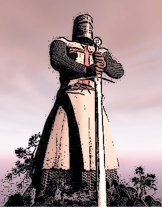

Нашата мисия е да подготвяме войни в борбата със злите езици.
Нашата мисия е да тренираме войни, които да се борят със злите врагове на нашето кралство. Врагове като отцепника от могъщата империя на Майкросорт – сър Шарп, силната и много влиятелна лейди Джава (която реши да се оттегли от зациклилата във времето империя Оркъл), суровият и леко скучноват водач на кралство Уеб – HTML и неговата прекрасна прекрасна дъщеря принцеса CSS, която внася красотата във цялото кралство Уеб, непредсказуемият, неконтролируем и набиращ голяма сила напоследък племенник на лейди Джава – Джокер Скрипт, и още, и още...
Целта на нашите трeнировки няма да бъде унищожението на врагове ни, а по-скоро да бъдат проучени, да бъдат разбрани и да бъдат приобщени към нашето кралство.
Към всеки един от тези врагове трябва да се подходи по различен начин. Трябва индивидуален подход и обучение към всеки един от тях, което ще бъде извършено в нашите тренировъчни центрове от екип от опитни професионалисти. Основният от тях е супер модерната лаборатория, разработена специално за борба срещу империята Майкрсорт – Визюал студио. В нея не само ще се подготвяме за борба срещу сър Шарп, но ще ни запознае и с един сдруг противник – племената на ексепшъните, битовете, луповете и др. Племена без лидер, които са готови да се сражават на страната на този, който предложи повече жълтици. И тъй като нашето кралство не е от богатите няма да можем да ги привлечем на наша страна с пари. В такъв случай през цялото ни обучение ще трябва да имаме предвид как да се борим и да побеждаваме тези племена. А научим ли да се справяме с тях, мисията да приобщим техните лидери към нашето кралство изглежда доста по-постижима.
Сър Шарп

Сър Шарп току уволнил се от служба при императора
Сър Шарп е английски граф, който спечелил титлата си (сър), докато се сражавал на страната на Империята Майкросорт. Но след непреодолими разминавания в идеите с императора (Уили Гейтс, който никога не му позволи да излезне open source), той реши да напусне и се премести да живее в Трансилвания, запазвайки титлите си, но все още не е open source (заради договорите за фирмена тайна и конфеденциалност, които беше подписал). Той все е много силен и влиятелен, но също така доста добре организиран и предвидим (разбира се и само ако си добре запознат с навиците му). Ако го опознаем добре имаме всички шансове да го победим. Но не си мислете, че това е лесна задача. Сър Шарп използва влиянието си за да привлече на него страна племената на ексепшъните, на битовете (известни с това, че имат само 2 имена г-н. Бит и г-жа Би) и на циклите (много важно племе, с което ако не сме запознати добре е безмислено да се влиза в битка).
За нашите цели, ще се подготвяте в супер модерната ни и скъпа лаборатория Вижюал Студио, където нашият екип ще ви запознае със силните и слабите страни на Сър Шарп. По време на тренировъчния процес ще ви бъде преодставена много информация за различните племена, а също така и техники как да ги подмамваме и заловяваме (английският термин, който използва Шарп е try and catch и може би по-добре описва подхода към тях), как да ги използваме и как да ги привлечем на наша страна. Най-силното оръжие в лабораторията, без което тренировките ни са обречени на провал е така нареченият дебъгер и ако искате да сте добре подготвени, трябва да се запознаете с него от самото начало.
Крал HTML и принцеса Селестиа
Могъщият крал и неговата принцеса
Сър Шарп е английски граф, който спечелил титлата си (сър), докато се сражавал на страната на Империята Майкросорт. Но след непреодолими разминавания в идеите с императора (Уили Гейтс, който никога не му позволи да излезне open source), той реши да напусне и се премести да живее в Трансилвания, запазвайки титлите си, но все още не е open source (заради договорите за фирмена тайна и конфеденциалност, които беше подписал). Той все е много силен и влиятелен, но също така доста добре организиран и предвидим (разбира се и само ако си добре запознат с навиците му). Ако го опознаем добре имаме всички шансове да го победим. Но не си мислете, че това е лесна задача. Сър Шарп използва влиянието си за да привлече на него страна племената на ексепшъните, на битовете (известни с това, че имат само 2 имена г-н. Бит и г-жа Би) и на циклите (много важно племе, с което ако не сме запознати добре е безмислено да се влиза в битка).
За нашите цели, ще се подготвяте в супер модерната ни и скъпа лаборатория Вижюал Студио, където нашият екип ще ви запознае със силните и слабите страни на Сър Шарп. По време на тренировъчния процес ще ви бъде преодставена много информация за различните племена, а също така и техники как да ги подмамваме и заловяваме (английският термин, който използва Шарп е try and catch и може би по-добре описва подхода към тях), как да ги използваме и как да ги привлечем на наша страна. Най-силното оръжие в лабораторията, без което тренировките ни са обречени на провал е така нареченият дебъгер и ако искате да сте добре подготвени, трябва да се запознаете с него от самото начало.
Лейди Джава
нещо си
Сър Шарп е английски граф, който спечелил титлата си (сър), докато се сражавал на страната на Империята Майкросорт. Но след непреодолими разминавания в идеите с императора (Уили Гейтс, който никога не му позволи да излезне open source), той реши да напусне и се премести да живее в Трансилвания, запазвайки титлите си, но все още не е open source (заради договорите за фирмена тайна и конфеденциалност, които беше подписал). Той все е много силен и влиятелен, но също така доста добре организиран и предвидим (разбира се и само ако си добре запознат с навиците му). Ако го опознаем добре имаме всички шансове да го победим. Но не си мислете, че това е лесна задача. Сър Шарп използва влиянието си за да привлече на него страна племената на ексепшъните, на битовете (известни с това, че имат само 2 имена г-н. Бит и г-жа Би) и на циклите (много важно племе, с което ако не сме запознати добре е безмислено да се влиза в битка).
За нашите цели, ще се подготвяте в супер модерната ни и скъпа лаборатория Вижюал Студио, където нашият екип ще ви запознае със силните и слабите страни на Сър Шарп. По време на тренировъчния процес ще ви бъде преодставена много информация за различните племена, а също така и техники как да ги подмамваме и заловяваме (английският термин, който използва Шарп е try and catch и може би по-добре описва подхода към тях), как да ги използваме и как да ги привлечем на наша страна. Най-силното оръжие в лабораторията, без което тренировките ни са обречени на провал е така нареченият дебъгер и ако искате да сте добре подготвени, трябва да се запознаете с него от самото начало.
.
ДжокерСкрипт
Никой не знае коя е следващата жертва
ДжаваСкрипт (още познат като ДжокерСкрипт, Js или просто Джокер) живее на север (отвъд Вала). Той е непредсказуем, неорганизиран, понякога безпричинен и хаотичен и в същото време много силен и влиятелен. Може да бъде много убедителен и съблазнителен и заради това хората използват услигите му в наши дни.
Той е племенник на лейди Джава, но разликите между тях са повече, отколкото приликите. Много често Джокерът е въвличан в съюз със скучният крал на кралство Уеб – HTML и хубавата му принцеса Селестиа (позната и само като CSS). Тези съюзи във времето са произвели много могъщи уеб приложения. Та ако искаме да се справим с Джокера първо трябва да сме опознали в детайли и да можем да се преборим с HTML и CSS. Но дори вече да сме ги привлекли на наша страна, Джокерът сам по себе си е много силен. Ще трябва специален подход към него. За тази цел сме създали допълнителни тренировъчни полета като космическия кораб Уебсторм, подводницата Съблайм и други, но разбира можете да изберете да тренирате и само в основната лаборатория Вижюал Стуидио.